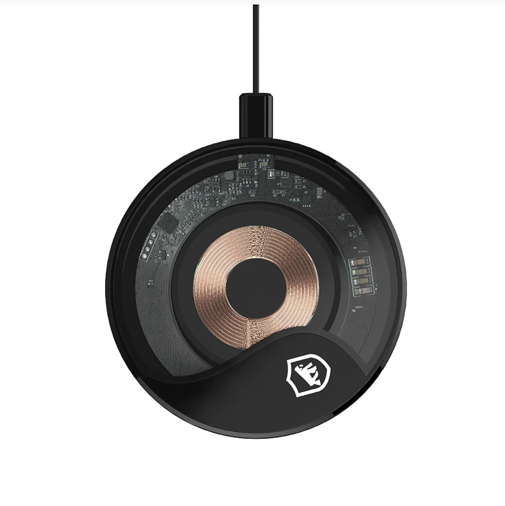

Com o Suporte Veicular Tank da Gshield você terá segurança e praticidade para acompanhar o mapa do seu trajeto enquanto dirige.
A fixação para o smartphone é feita por magnetismo militar - 6 imãs de alto magnetismo.
Cor
Preto
Especificações
Marca: Gshield
Tamanho: 6x4,5x1 cm (AxLxP)
Cor: Preta
Peso: 53 gramas
Forma de fixação no automóvel: Presilha de pressão ajustada a entrada do ar-condicionado
Movimentação: 360°
Garantia
3 meses
Valor
R$ 89,97,00 à vista no Pix
ou 5x de R$ 30,00
Caregador wireless

Imagem ilustrativa
Gorrila Shield
O Carregador Wiriless Future é leve, prático e elegante! Ideal para deixar na mesa do escritório, na sala de estudos ou ao lado da cama, pois alimenta a bateria do celular por indução.
Isso quer dizer que não é necessário conectar o aparelho telefônico a um cabo.
Para usar, basta plugar o acessório na tomada/notebook/PC e depositar o smartphone sobre o ele*.